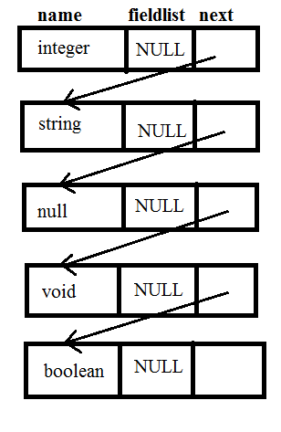
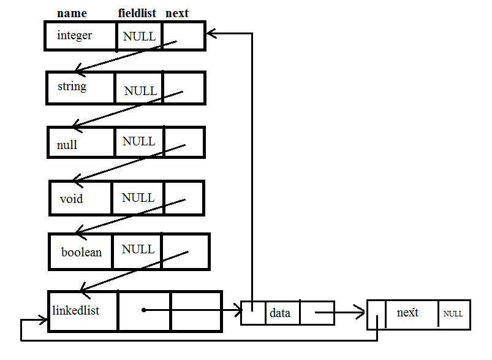
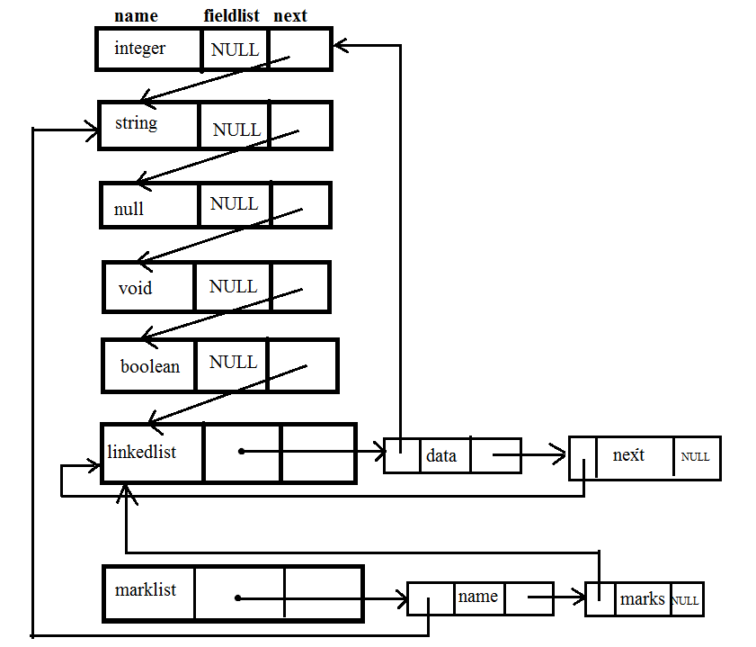
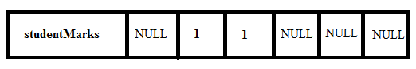
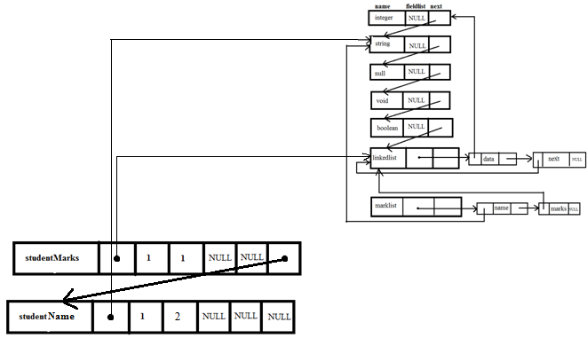
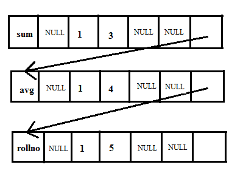
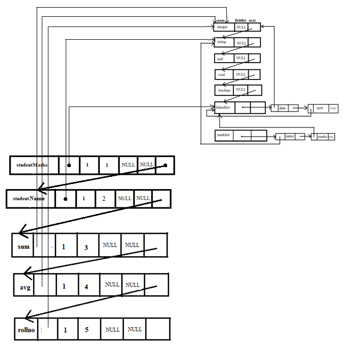
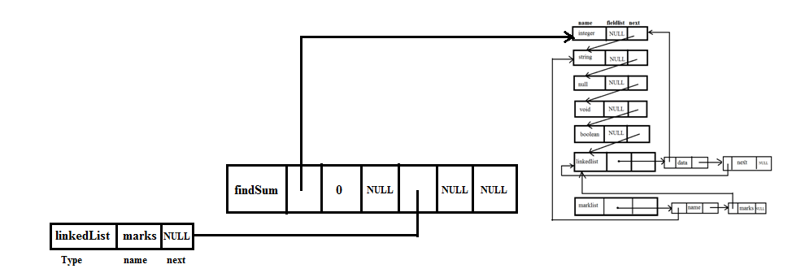
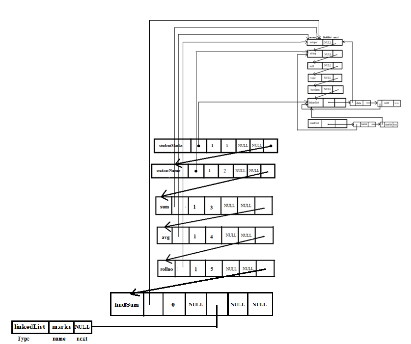
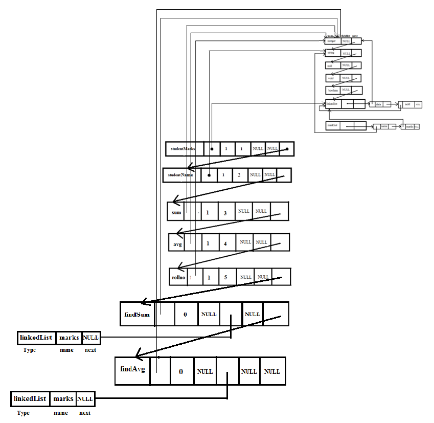

DATA STRUCTURES
Type Table
The Type Table stores all necessary information regarding the various user defined types in the source program. The compiler creates an entry in the Type Table for each user defined type. In addition to this, there are default entries created for primitive types (int, str) and special entries null, Boolean and void for the internal purposes of the interpreter. The default and special entries are made beforehand whereas entries for user defined types are made as the Type Declaration Section of the source code is parsed.
1.1 Structure
The following structure can implement a Type Table:
typedef struct TypeTable
{
char *name; // type name
fieldList *fields; // pointer to the head of the fieldlist
struct TypeTable *next;
}TypeTable;
The name field stores the type name such as int or a user-defined field, say mytype.
The fieldList stores information regarding the different fields in the case of a user defined type. We will use a linked list to store the the name and type of all the fields. The pointer to the head of this list is stored in fieldlist.
typedef struct fieldList
{
char *name; //name of the field
struct TypeTable *type; //pointer to type table entry
struct fieldList *next;
}fieldList;
The name field is set to the name of the field (as a string) and type stores a pointer to entry for its type in the Type Table. The next field points to the next entry in the field list. The value of next is set to NULL if there are no more fields.
The next field of the type table stores pointer to the next type table entry.
1.2 Associated methods
void TTableCreate(): Function to initialize the type table with entries for primitive and internal data types.
TypeTable* TLookUp(char *name): Returns pointer to type table entry of type name.
TypeTable* TInstall(char *name, fieldList *fields): Creates a type table entry for user defined type of given name with given fieldlist.
TypeTable* TAppend(TypeTable *t1): Updates the Type Table by appending the entry for the type whose information is stored in t1 into it.
int isUserDefinedtype(TypeTable *t): Returns 0 or 1 based on whether t is an User defined type.
fieldList* FInstall(char *name): Updates the fields by appending the entry for the field whose information is stored in t1 into it.
void AddFType(TypeTable *type, fieldList *f): Links a field list to a type.
fieldList* FAppend(fieldList *f1, fieldList *f2): Appends two field lists and returns the head of the resultant list.
fieldList* FLookUp(char* name, char* fieldname): Searches for a field in an user defined type and returns the pointer to it.
int fieldRelativeAddress(TypeTable *t, char *name): Returns the relative address of a field in an user defined type.
1.3 Illustration
Let us consider the following sample code:
decl
linkedlist {
int data;
linkedlist *next; }
marklist{
str name;
linkedlist *marks; }
enddecl
//… Global Declarations…
//…Functions….
1. The type table is first created and initialized to contain the default entries for each of the primitive data types and internal types. This is done through a call to function, void TTableCreate()from the main function even before yyparse() is called to start parsing the code.
On the completion of Step 1, the created type table would look like this:

2. Now yyparse() is invoked. It starts parsing the Type Declaration Section of the source code. As the definitions of user defined types are encountered, they are entered in the type table. Consider the first type declaration:
linkedlist {
int data;
linkedlist *next; }
When the corresponding reductions take place, an intermediate linked list,( intermList { char *type; char *name) is created containing the names and types of all the fields in the field list of the user defined type. Note that the type is stored as a string and not as the pointer to its type table entry as required in the type table. This is because when these reductions take place we don’t yet have an entry for linkedlist itself. So fields of the user defined type that is being currently declared cannot store a pointer to type table entry to indicate type. Hence the type name is stored as a string and a call is made to function, TypeTable* TInstall(char *name, intermList *fields)when the final reduction for ID ‘{‘ fieldlist ‘}’[link] happens to create the required type table entry. It is then passed to the function, TypeTable* TAppend(TypeTable *t1)to be appended to the Type Table.

3. Similar actions are carried out for the second user defined type declaration. The Type table would now look like this:

4. Once the type declaration section is completely parsed, the Type Table is fully created and will not be further modified or updated.
Symbol Tables
Symbol Tables are maintained by the compiler to store all necessary information regarding the variables used in the source program. Information regarding global variables is stored in the Global Symbol Table and that of local variables are stored in the Local Symbol Table.
Global Symbol Table(GST)
2.1 Structure
typedef struct GSymbol{
char *name;
TypeTable *type;
int size;
int binding;
struct ArgStruct *arglist;
struct AST *fbinding;
struct GSymbol *next;
}GSymbol;
The name field sores the name of the variable/function.
The type field stores the pointer to the Type Table entry of the variable type/return type of the function.
The size field stores the size in case of array. (The sizes of all other variables are 1.)
binding stores the memory address allocated to the variable.
arglist stores the argument list in case of functions.
fbinding stores pointer to the root of AST of the function [Note: In the case of a compiler,the call address must be stored here]
The next field stores the pointer to the next entry in the GST.
2.2 Associated functions
GInstall(char*name, TypeTable *type, int size, Argstuct *arglist) : Creates as GST entry of given name, type, size and argument list(in case f functions) and assigns a BINDING to the variable.
Glookup(char *name) : Returns pointer to symbol table entry of variable of given name.
GAppend(GSymbol *g1,GSymbol *g2) : Updates the GST by appending the entries for the variables whose information is stored in list pointed to by g2into the end of the list pointed to by g1.
AddGType(TypeTable *gtype, GSymbol *g) : Updates the GST entry g by setting its type field to the Type table entry pointed to by the parameter, gtype.
2.3 Illustration
Continuing the earlier example, let’s add the global declaration section to it.
decl
linkedlist {
int data;
linkedlist *next; }
marklist{
str name;
linkedlist *marks; }
enddecl
char *Name;
gdecl
linkedlist studentMarks;
str studentName;
int sum, average, rollno;
int findSum(linkedlist marks);
int findAvg(linkedlist marks);
endgdecl
1. When the declaration for the identifier studentMarks is encountered, an entry of type GSymbol is created by a call to the function GInstall(). Since we do not yet know the type of the variable, we will set it to NULL for the time being. This will be updated later.

2. After the Type field is also set, the situation is as follows

3. After a similar set of actions for creating an entry for the global declaration, str studentName; , it is appended to the GST using the function GAppend().

4. Entries for sum, average and rollno are created using GInstall() and appended using GAppend().

5. The type field is updated on encountering int using the function AddGType() and the resulting list of entries is appended to the GST using GAppend().

6. An entry is created for findSum() using GInstall() and its ARGLIST field is updated to contain a pointer to a linked list containing the argument list. Its type field is later updated later using AddGType() . The final entry looks like this:

7. The above entry is appended to the GST using GAppend(). (The FBINDING field will be updated later, when the function’s statement list is parsed.)

8. Similar actions are carried out for findAvg(). The final GST looks like this:

Local Symbol Table
3.1 Structure
typedef struct LSymbol{
char *name;
TypeTable *type;
int binding;
struct LSymbol *next;
}LSymbol;
The name field sores the name of the variable.
The type field stores the pointer to the Type Table entry of its type.
binding stores the memory address allocated to the variable.
The next field stores the pointer to the next entry in the Local Symbol Table.
3.2 Associated functions
LSymbol* LInstall(char*name, TypeTable *type, int size) : Creates as Local Symbol Table entry of given name, type and size.
LSymbol* Llookup(char *name) : Returns pointer to symbol table entry of variable of given name.
LSymbol* LAppend(LSymbol *l1, LSymbol *l2) : Appends the local symbol table entries l1 and l2 and returns the resultant pointer to the head.
void AddLType(TypeTable *ltype,LSymbol *l) : Update the Local Symbol Table entry l by setting its type field to the Type table entry pointed to by the parameter, ltype.
void setLocalBindings(LSymbol *LSymbolHead) : Update the Local Symbol Table entries LSymbolHead by setting its binding field to the appropriate relative positions on stack.
3.3 Illustration
Continuing the above example, we move on to the list of functions. Let us consider the first function, findSum() to see how the LST is created for it. The function definition is given below:
The LST is formed for the Local Declaration Section in the same way GST was created for the Global declaration section. Every function has its own LST. Memory is allocated for local variables from a separate area (the stack). Hence, the binding for each LST starts from 1. This binding is added to the Base Pointer (BP [LINK]) to obtain the actual index inside stack. This is explained in detail later. In the above example, the LSTs for the two functions will look like this:
Abstract Syntax Tree
The Abstract Synatx Tree structure described below facilitiates implementation of the abstract syntax tree (intermedite form) representation of a sequence of program statements. It is this AST that is finally passed to the interpreter/compiler for evaluation/code generation. (Further explanation may be found in --text ref--.) We create an AST for each function and store the pointer to its root in the function’s Global Symbol Table entry. We will use the following structure to implement the AST:
4.1 Structure
struct AST {
struct TypeTable *type;
int nodetype;
char *name;
union Constant value;
struct ASTnode *arglist;
struct ASTnode *ptr1,*ptr2,*ptr3;
struct GSymbol *Gentry;
struct LSymbol *Lentry;
}AST;
The type field stores the pointer to the Type Table entry indicating the type of value stored in the node.
nodetype identifies the contents of the node using an integer to indicate each of them.
value field stores the value in case of constant nodes.
union Constant {
int intval;
char* strval;
};
is used to store the value since it may be a string constant or an integer constant.
arglist stores the pointer to argument list in case of functions.
ptr1 , ptr2 and ptr3 together facilitate the construction of the tree. How the tree is constructed using these pointers in case of different kinds of statements is listed below: []
Gentry stores pointer to Global Symbol Table.
Lentry stores pointer to the function’s Local Symbol Table.
4.2 Associated Methods
AST* Treecreate(TypeTable *type,int nodetype,char *name,Constant value,AST *arglist,AST *t1,AST *t2,AST *t3)- Creates a node with the appropriate fields set to the corresponding parameters and returns it.
AST* TreeAppend(AST *t,AST *t1, AST *t2, AST *t3)- Appends sets Ptr1, Ptr2, Ptr3 of t to t1, t2, t3 respectively.
memstruct interpret(AST *t) – evaluates (interprets) the AST with root t and returns the evaluated result. Since the result may be an integer, string or a the pointer to a memory location (indicated here as the index in the array that simulates memory. So we make use of the following union:
void setVariableType(AST *t, int isArray) - the AST of nodetype Identifier is passed as an argument along with a flag isArray to set Lentry and Gentry fields on searching appropriate symbol tables
typedef struct memstruct{
int type;
Constant value;
}memstruct;